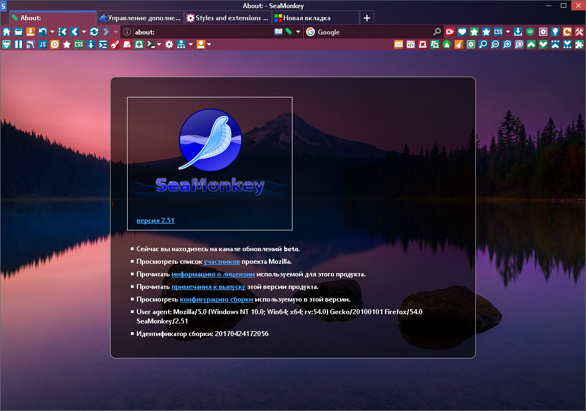
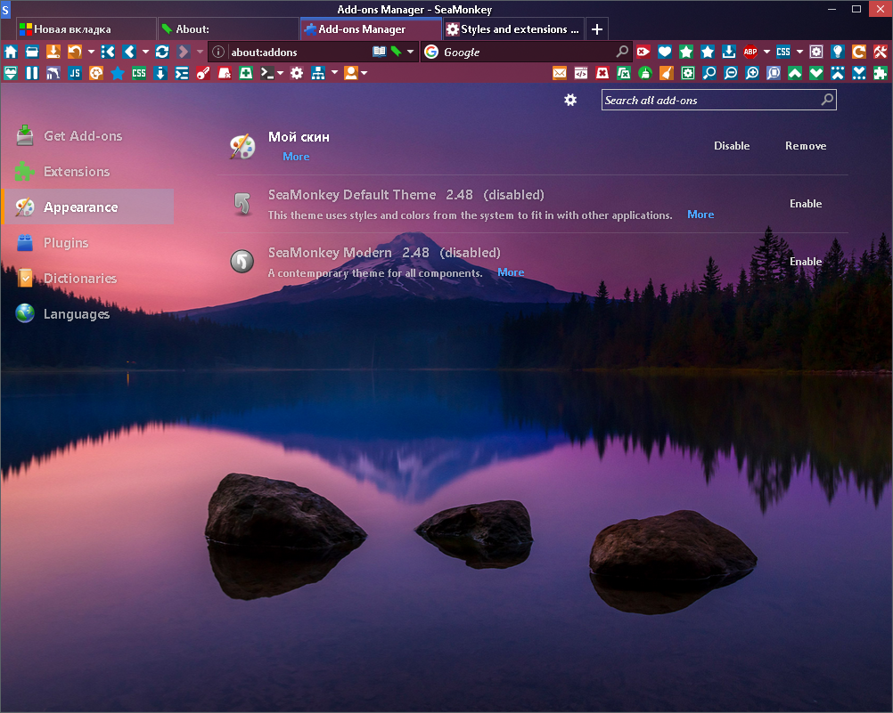
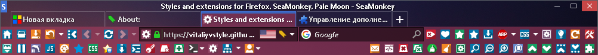

FULL STYLE
update: 05-05-2017
Стиль для моего расширения
Style CSS
Содержимое архива распаковать в папку профиля SeaMonkey.
Использовать данный стиль с темой по умолчанию или с лёгкими темами (если тема тёмная будет использоваться оформление от стиля как на скриншотах).
Содержимое файла stylecss_author.css почти не нужно для интерфейса и можно удалить.
Чтобы добавить кнопки закрытия на вкладки раскомментируйте код после комментария /*Кнопки закрытия на вкладках*/
или закрывать вкладки СКМ, но удобнее ПКМ
Right click close tab.
Чтобы изменить расположение кнопки новой вкладки в окне почты раскомментируйте код после комментария /*Кнопка новой вкладки в окне почты*/ .
Стиль не простой и не предназначен для всех...
Чтобы убрать / заменить заголовок окна, установите расширение
Control Buttons
Изменить скроллбар и тултипы можно с помощью
Agent Sheet или добавить CSS (код можно даже из Agent Sheet взять) в файл stylecss.css


